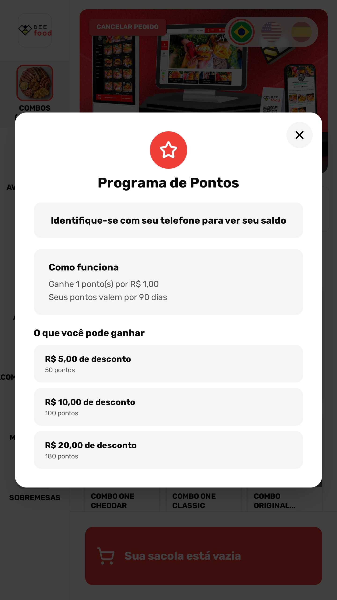
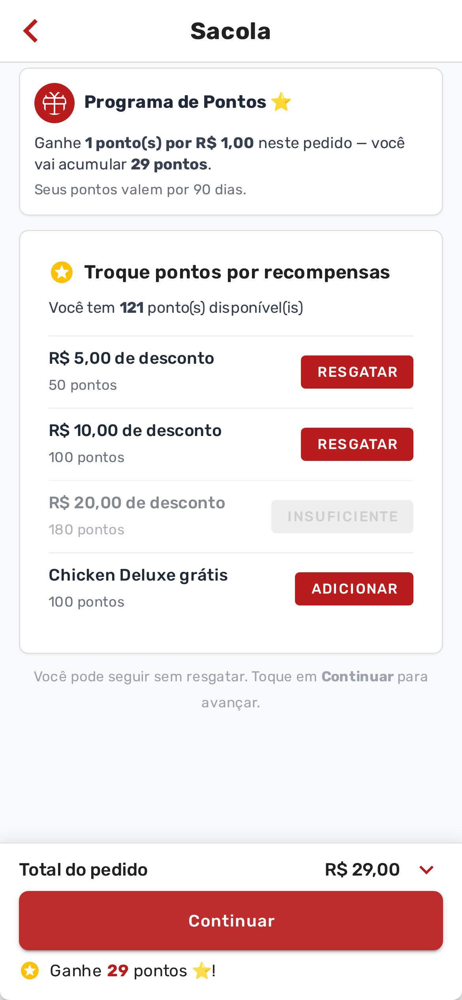

BUSCAR
CARRINHO
MINHA CONTA
DESTAQUES
CARDÁPIO
AVALIE
🇧🇷
🇪🇸
🇺🇸
Combos
Burgers
Bebidas
⭐
Programa de Pontos ⭐
Ganhe 1 ponto(s) por R$ 1,00 · Toque para ver o que você pode ganhar
Combos (Burger + Porção + Bebida)

COMBO CHICKEN DELUXE
Pão brioche com gergelim mesclado, frango empanado,
queijo prato e alface americana
R$ 29,00
Pedir

COMBO TASTY BACON
Pão brioche de gergelim, queijo cheddar, maionese
defumada e fatias de bacon
R$ 38,00
Pedir

COMBO ONE CLASSIC
Pão brioche, hambúrguer de 100 g, alface, tomate,
cebola roxa e maionese verde
R$ 31,00
Pedir
